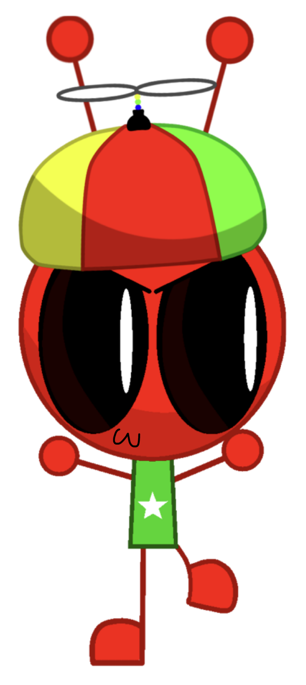
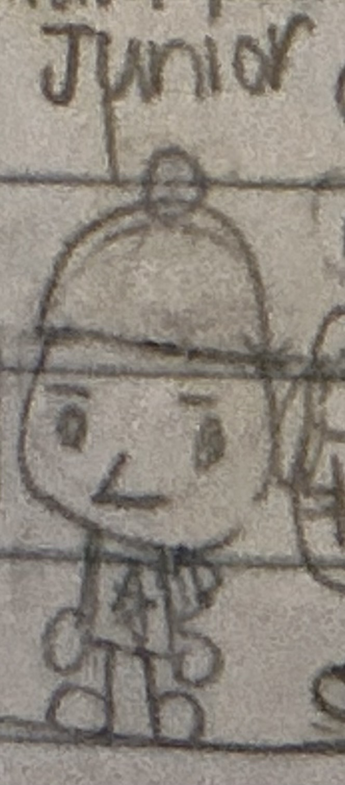

Junior


| Joseph Berrison | |
|---|---|
| Character information | |
| Nickname | Junior |
| Species | Alien |
| Gender | Male |
| Age | 7 |
| Family | The Berrison family |
| Older brother | Jstar Berrison |
| Older sister | Dream Berrison |
| Residence | Starland, Planet Blue-Dust |
| Housemates | Jstar, Stickman and Simariki |
Overview
Joseph Berrison, commonly known by his nickname Junior, is a seven-year-old male alien and one of the main characters in The Incredible Adventures of Jstar (TIAOJ), also known as redJSR TIAOJ. He is Jstar Berrison's younger brother and a member of the Berrison family.
Appearance
Junior wears a green shirt with a white star and a propeller hat. His outfit features the star motif also seen on Jstar's shirt, while the green shirt distinguishes Junior's appearance from his older brother's dark blue clothing.
Family
Junior is the younger brother of Jstar, who is eighteen years old, and Dream, who is six years old. Their parents are Janicia Berrison and Corey Berrison. Junior is part of the Berrison family in Starland.
Residence
Junior lives with Jstar, Stickman and Simariki. His household includes his older brother and two of Jstar's housemates.
Relationships
- Jstar Berrison: Junior's eighteen-year-old older brother.
- Dream Berrison: Junior's six-year-old older sister.
- Janicia Berrison: Junior's mother.
- Corey Berrison: Junior's father.
- Stickman: One of Junior's housemates and Jstar's longtime friend.
- Simariki: One of Junior's housemates, a seventeen-year-old squirrel inventor.